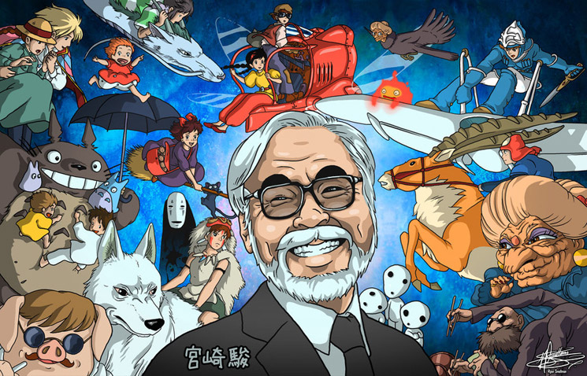
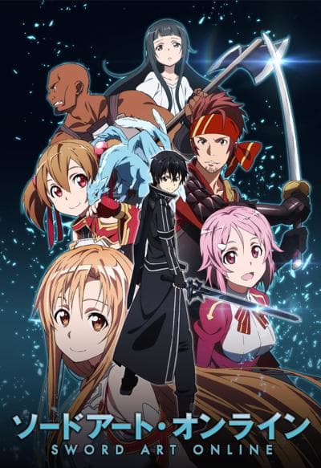
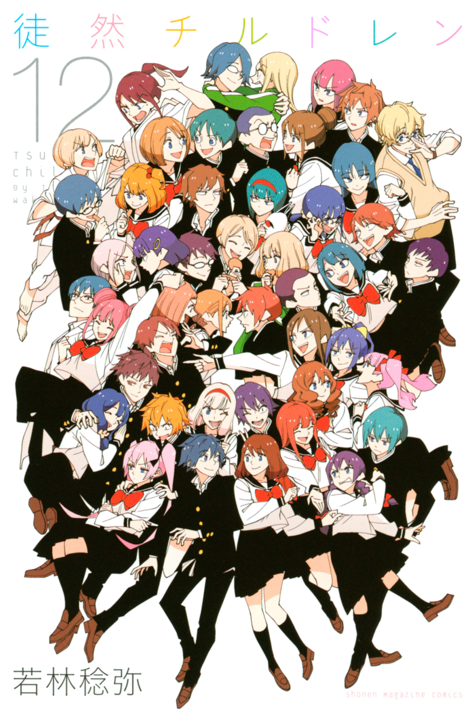
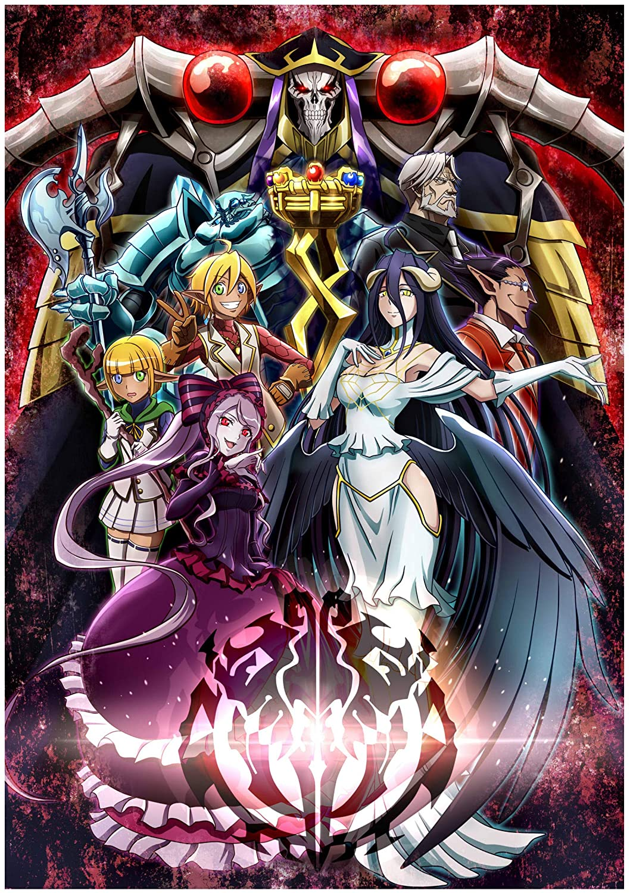
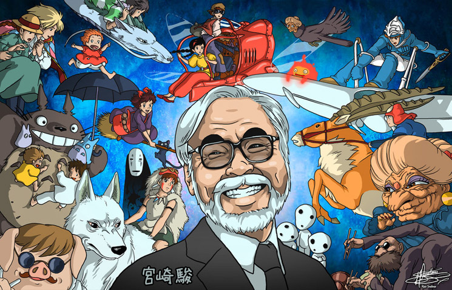
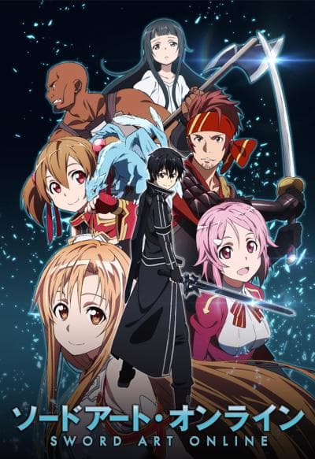
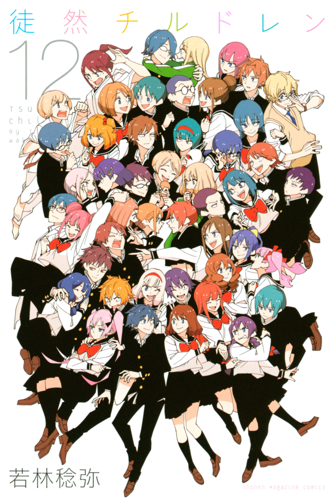
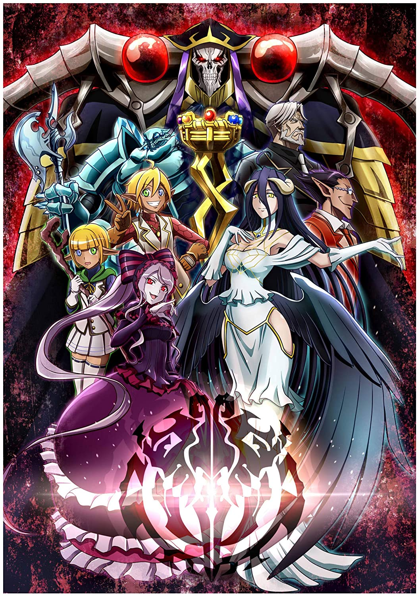

A selfie of me
A selfie of me
Harry Wu
IOS207
Anime is a style of animation originating in Japan that is characterized by stark
colorful graphics depicting vibrant characters in action-filled plots often with fantastic or futuristic themes.
Either the long and passionate Dragon Ball, One Piece, Naruto, Pokemon...(first picture) or the masterpiece like
My Neighbor Totoro, Spirited Away...(second picture) by Hayao Miyazaki are all regarded as Animes.
This is a story about how Kirito, a solo player who got the chance to play much more time than others,
led hundreds of people to escape from a huge game called Sword Art Online which trapped them.
Some thoughts: I liked the romantic relatied part of Kirito and Asuna the most:D
Tsuredure Children tells various romantic stories about how it is hard to say “I love you”, between
young students attending the same high school, in omnibus format. The characters in each story are
connected to each other through their various friendships.
(the second picture on the right is all of the Couples :D)-->
Some thoughts: The emotions between two loving people relly makes me feel great!
The main character, Ainz, was transported to the game that he always plays and became the top tier character
that he made which has lots of strong subordinates. Overlord is an anime about how Ainz and his subordinates
rule the world one step at a time.(though they are all stronger than the strongest exist in the word)
Some thoughts: Though the animation and sound affect seems poor, but the great polt can cover this disadvantage.
I like anime that are romantic related or some fighting related(it would be excellent if it has both elements).
And I don’t have much requirement for the sound effect or drawing, the plot is more important for me.
At last, I don’t like the anime that are compared to the ones I like, well, I think this is all because of juellis :D
I like Anime so much so I even started to draw anime characters!
Here's some work!
 






